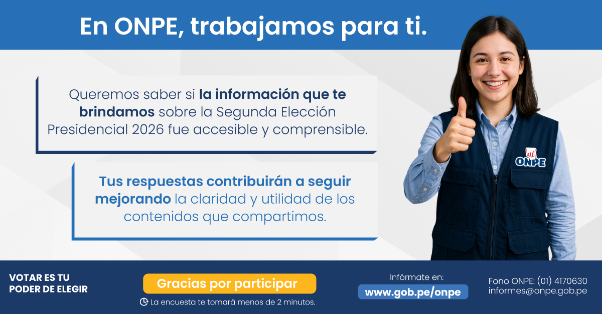

El período de respuesta ha concluido. Agradecemos su participación.
Este dispositivo ya participó en la encuesta. Solo se permite una respuesta por dispositivo.

Gracias por participar en esta encuesta.Su opinión contribuye a mejorar la labor de la ONPE.